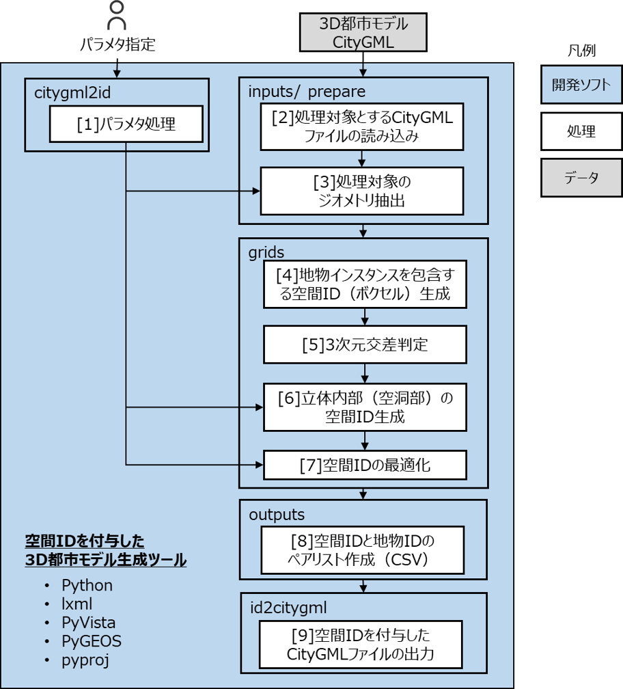
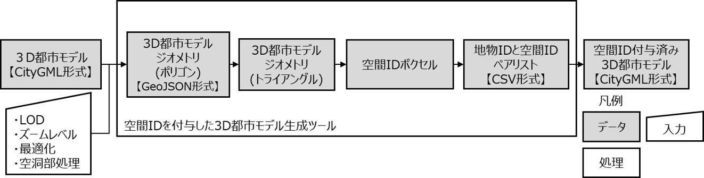
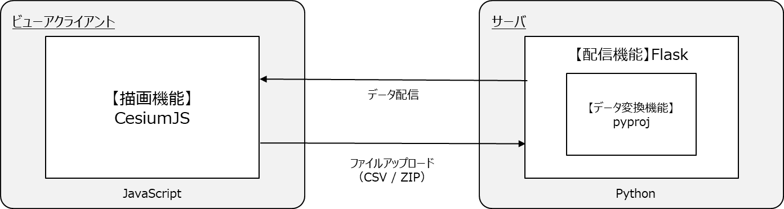
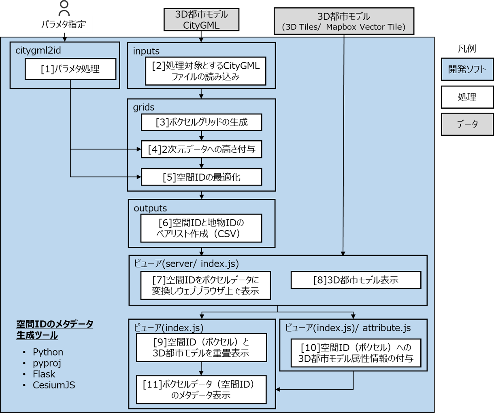
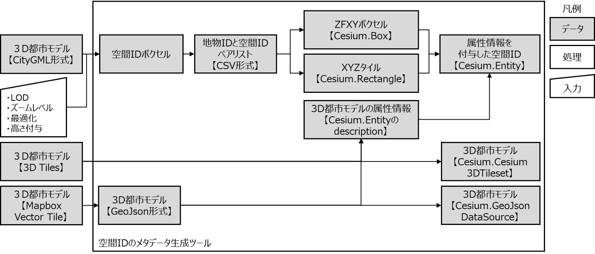

プログラム設計
空間IDを付与した3D都市モデル生成ツール
プログラム構成
| プログラム構成 | 説明 | ||
| 1 | メインプログラム | citygml2id.py | CityGML から gml_id と空間IDのペアを CSV 出力するツール |
| 2 | id2citygml.py | 空間IDのCSV ファイルからCityGMLファイルを更新（空間IDの拡張属性作成）するツール | |
| 3 | サブプログラム | grids.py | ボクセルグリッドを構築するためのプログラム |
| 4 | inputs.py | ファイルを入力するためのプログラム | |
| 5 | outputs.py | ファイルを出力するためのプログラム | |
| 6 | prepare.py | CityGMLファイルを前処理（解析）するためのプログラム | |
| 7 | constants.py | 定数定義 | |
アーキテクチャ
システムアーキテクチャ

データアーキテクチャ

空間IDのメタデータ生成ツール
本ツールは空間IDが付与されたCityGMLファイルを入力とし、地物IDと空間IDのペアリストファイル（CSV形式）を出力するコマンド部と、地物IDと空間IDのペアリストファイルを可視化するためのビューア部に分かれている。コマンド部は、空間IDを付与した3D都市モデル生成ツールと同じであるため、ビューア部について説明する。
ソフトウェア構成（ビューア部）

プログラム構成（ビューア部）
| プログラム構成（ビューア部） | 説明 | ||
| 1 | サーバ | server.py | 空間IDからボクセル形状の生成等を行うプログラム |
| 2 | cleanup.py | 一時ディレクトリの古いファイルを削除するプログラム | |
| 3 | ビューアクライアント | index.js | サーバへのファイルアップロードとサーバから配信されるデータをビューアに表示するプログラム |
| 4 | attribute.js | 空間ID（ボクセル）のメタデータ（3D Tiles/ Mapbox Vector Tileに記録された属性）を取得するプログラム | |
システムアーキテクチャ

データアーキテクチャ
